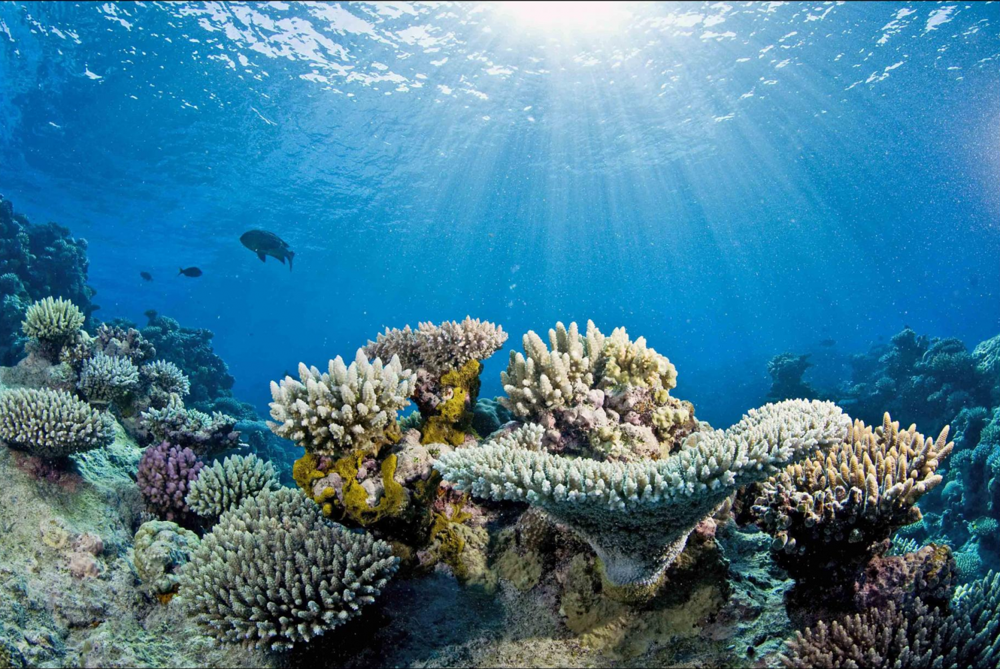

Why Protect Them?

- ECOLOGICAL IMPORTANCE
- Healthy ecosystems depend on plant and animal species as their foundations. When a species becomes endangered, it is a sign that the ecosystem is slowly falling apart. Each species that is lost triggers the loss of other species within its ecosystem. Humans depend on healthy ecosystems to purify our environment. Without healthy forests, grasslands, rivers, oceans and other ecosystems, we will not have clean air, water, or land. If we allow our environment to become contaminated, we risk our own health.
- MEDICAL
- Over 50% of the 150 most prescribed medicines were originally derived from a plant or other natural product. Unfortunately, only about 5% of known plant species have been tested for medicinal uses and there are thousands of plant species that have yet to be identified. Tens of thousands of Americans die every year from illnesses for which there is no known cure. The cures for these diseases may eventually come from plants, therefore, we must protect all species before they are lost forever from nature’s medicine cabinet.
- AGRICULTURAL
- Agriculture also plays an important role in the protection of species, farmers are often seen as the original conservationists. Many farmers set aside portions of their land as wildlife habitat and also work in partnership with groups such as Trout Unlimited to restore river and stream habitats for endangered and threatened fish and reptiles. In addition, wild relatives of common crops contain important genetic material needed to maintain these crops. These relatives can be used to ensure crops are disease-resistant while providing information for developing new crops that can grow in less than adequate lands.